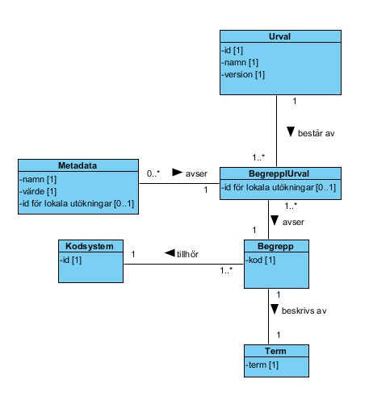
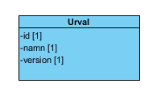

infrastructure: informationstructureservice: terminology
1.0.0 - draft
infrastructure: informationstructureservice: terminology - Local Development build (v1.0.0) built by the FHIR (HL7® FHIR® Standard) Build Tools. See the Directory of published versions
Källa: Tjänstekontraktsbeskrivning Terminologitjänst, version PA1 (2013-10-30), Tjanstekontraktsbeskrivning_Terminologitjanst.docx.
Här beskrivs de meddelandemodeller som tjänstekontrakten bygger på. För varje modell beskrivs hur mappning ser ut mot schema (XSD) för tjänstekontrakt.
Meddelandet hämta urval hämtar information om de begrepp och termer som ingår i urvalet tillsammans med information om urvalet. För de begrepp som har ytterligare metadata i detta urval hämtas även denna. Notera att metadata är urvalsspecifikt, det vill säga ett begrepp som inte ingår i ett urval har inte metadata, och metadata delas inte mellan olika urval.

Figur 4. Meddelandemodell hämta urval.| Klass.attribut | Mappning mot XSD GetTerminologySubsetResponse |
|---|---|
| Urval.id | Subset/SubsetInformation/@SubsetIdentity |
| Urval.namn | Subset/SubsetInformation/@Name |
| Urval.version | Subset/SubsetInformation/@Version |
| BegreppIUrval.id för lokala utökningar | Subset/Concept/@LocalOrganizationExtensionId |
| Kodsystem.id | Subset/Concept/@CodeSystem |
| Begrepp.kod | Subset/Concept/@Code |
| Term.term | Subset/Concept/@Term |
| Metadata.namn | Subset/Concept/Metadata/@Name |
| Metadata.värde | Subset/Concept/Metadata/@Value |
| Metadata.id för lokala utökningar | Subset/Concept/Metadata/ @LocalOrganizationExtensionId |
Meddelande hämta information om urval hämtar ut senaste versionsidentifierare, namn och id för urval.

Figur 5. Meddelandemodell hämta information om urval.| Klass.attribut | Mappning mot XSD GetTerminologySubsetInformationResponse |
|---|---|
| Urval.id | Subset/SubsetInformation/@SubsetIdentity |
| Urval.namn | Subset/SubsetInformation/@Name |
| Urval.version | Subset/SubsetInformation/@Version |
Detta meddelande är resultatet av en terminologisökning. Beroende på sökparametrar returneras en delmängd av ett urval med tillhörande metadata och termer. I meddelandet hämtas även information om urvalet.
Figur 6. Meddelandemodell sökning i terminologi.
| Klass.attribut | Mappning mot XSD GetConceptsResponse |
|---|---|
| Urval.id | Subset/SubsetInformation/@SubsetIdentity |
| Urval.namn | Subset/SubsetInformation/@Name |
| Urval.version | Subset/SubsetInformation/@Version |
| BegreppIUrval.id för lokala utökningar | Subset/Concept/@LocalOrganizationExtensionId |
| Kodsystem.id | Subset/Concept/@CodeSystem |
| Begrepp.kod | Subset/Concept/@Code |
| Term.term | Subset/Concept/@Term |
| Metadata.namn | Subset/Concept/Metadata/@Name |
| Metadata.värde | Subset/Concept/Metadata/@Value |
| Metadata.id för lokala utökningar | Subset/Concept/Metadata/ @LocalOrganizationExtensionId |
Det finns inga formatregler utöver de datatyper som anges i respektive tjänstekontrakt.